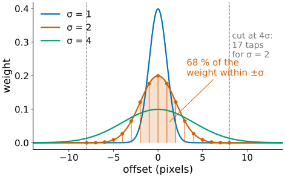
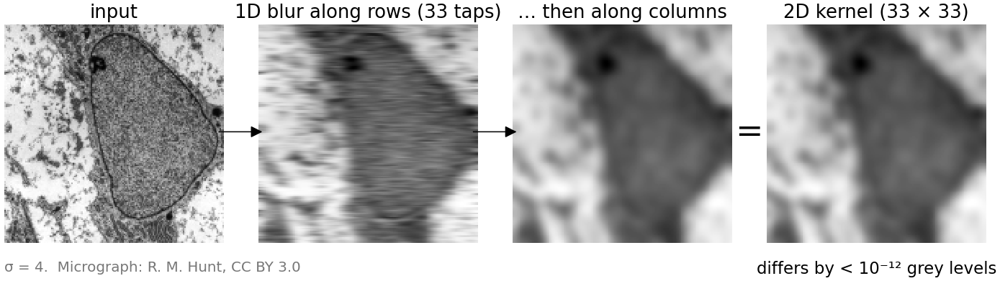
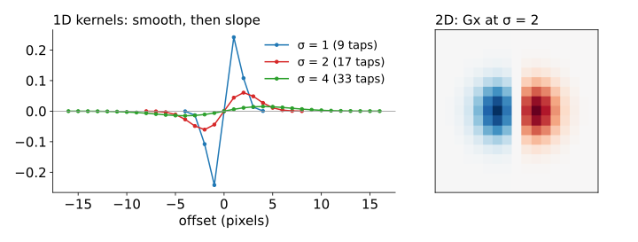
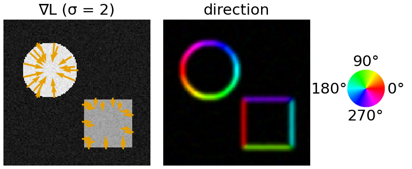
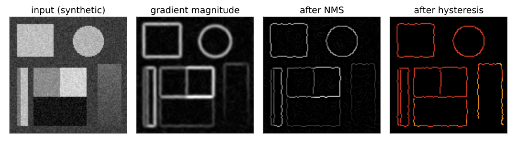
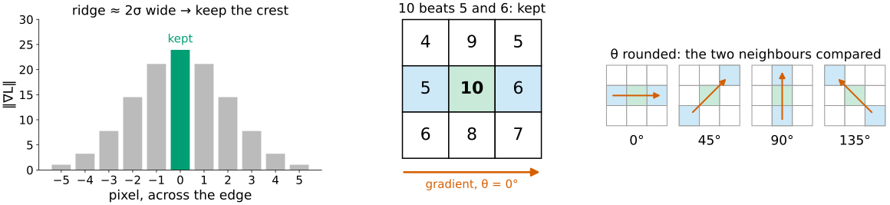
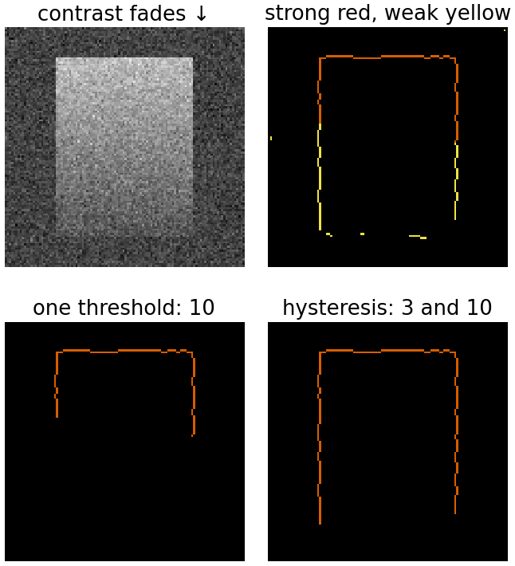
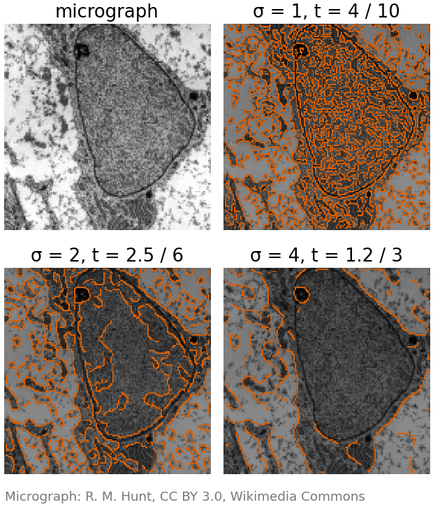

The filtering unit ended with “smooth first, then differentiate”. Today we make that precise, and build the classic edge detector on top of it (Canny, 1986).
The Gaussian of width σ: one knob for how much to smooth.
Separable: a 2D Gaussian is two 1D passes.
Derivative of a Gaussian: smoothing and differentiating in one kernel.
Gradient magnitude and direction at every pixel.
Canny in four steps: smooth, gradient, non-maximum suppression, hysteresis.
How to choose σ and the two thresholds.
Slides titled The math give the formulas and proofs; the ideas are complete without them.
From the filtering unit: a derivative is a difference of neighbours, and noise is exactly “a pixel that differs from its neighbours”. Smooth first, then differentiate: one clean bump at the edge.
The Gaussian of width σ
The bell curve as a kernel: weights \propto e^{-x^2/2\sigma^2}, scaled to sum to 1.
σ in pixels sets how far the averaging reaches. About 68 % of the weight lies within ±σ, 99.7 % within ±3σ.
So the kernel can be cut at 3σ to 4σ (our demos: 4σ). σ = 2 needs 2 \cdot 8 + 1 = 17 taps.
The 3×3 Gaussian of the filtering unit ([1\;2\;1]/4 in each direction) is a Gaussian with σ ≈ 0.85.
Larger σ: less noise, but edges get wider, corners round off, and edges that are close together merge.

There is no free lunch: every σ trades noise against detail. Choosing σ is choosing the scale of the edges you want (next unit: scale space).
Separability: two 1D passes
A 2D Gaussian is a product: G_\sigma(x, y) = g_\sigma(x)\,g_\sigma(y).
Blur every row with the 1D kernel, then every column of the result. Same answer as the 2D kernel.
Cost per pixel with k taps: k^2 multiplications directly, 2k separably.
σ = 4: k = 33, so 1089 against 66.
Recall Sobel: a smoothing column [1\;2\;1]^\top times a derivative row [-1\;0\;1]. Also separable.

Derivative of a Gaussian
Smoothing then differentiating is one kernel (convolutions combine): the derivative of the Gaussian.

Shape: a positive and a negative lobe: “right side minus left side, with Gaussian weights”.
In 2D, G_x = a Gaussian derivative along x times a plain Gaussian along y: Sobel’s big brother, with a tunable σ.
Weights are scaled so that a ramp of slope 1 gives exactly 1: the response is the slope of the smoothed image, in grey levels per pixel.
The math: the derivative of a Gaussian
Smoothing is a convolution, L = G_\sigma * I. Differentiate under the integral:
So the slope of the smoothed image is the image filtered with \partial_x G_\sigma; we never need \partial_x I itself (which does not exist for a noisy, sampled image).
With G_\sigma(x) = \frac{1}{\sqrt{2\pi}\,\sigma}e^{-x^2/2\sigma^2}: \quad\partial_x G_\sigma(x) = -\dfrac{x}{\sigma^2}\,G_\sigma(x).
Separability: G_\sigma(x, y) = g_\sigma(x)\,g_\sigma(y), hence \partial_x G_\sigma = g'_\sigma(x)\,g_\sigma(y): a 1D derivative kernel along rows, a 1D Gaussian along columns.
Same for any order: \partial_x^m\partial_y^n G_\sigma = g^{(m)}_\sigma(x)\,g^{(n)}_\sigma(y) (the Hessian unit uses m + n = 2).
The math: how much noise survives?
White noise of variance s^2 (independent pixels) through a kernel w has variance s^2\sum_k w_k^2.
\tfrac12[-1\;0\;1]: s^2(\tfrac14 + \tfrac14) = s^2/2, while a ramp of slope 1 still gives 1.
Derivative of a Gaussian (1D, normalised to slope 1): \sum_k w_k^2 \approx \dfrac{1}{4\sqrt\pi\,\sigma^3}: 0.14 at σ = 1, 0.018 at σ = 2. Doubling σ cuts the noise variance 8-fold.
In frequency (recall the Fourier unit): differentiating multiplies by i\omega, which boosts high frequencies, where white noise lives; the Gaussian multiplies by e^{-\sigma^2\omega^2/2}. The product i\omega\,e^{-\sigma^2\omega^2/2} is a band-pass: it peaks at \omega = 1/\sigma.
Try it: smoothing before differentiating
Gradient: magnitude and direction
At every pixel, the two slopes L_x and L_y of the smoothed image form the gradient\nabla L = (L_x, L_y).
Magnitude\|\nabla L\| = \sqrt{L_x^2 + L_y^2}: the edge strength.
Direction θ: where brightness increases fastest. It points across the edge, from dark to bright.
Convention: x to the right, ydown (rows), so L_y is the change going down; θ is counted counter-clockwise on the screen from the x axis.
Example: L_x = 3, L_y = -4 (brighter to the right and up): strength \sqrt{9 + 16} = 5, direction \operatorname{atan2}(4, 3) = 53°.

Right: the direction as a colour (hue), the magnitude as its brightness, as in the demos.
The math: why look along the gradient?
The slope of L in a direction given by a unit vector \mathbf u is the directional derivative
\partial_{\mathbf u} L = \nabla L \cdot \mathbf u = \|\nabla L\|\cos\angle(\nabla L, \mathbf u).
It is largest for \mathbf u \parallel \nabla L, with value \|\nabla L\|; it is zero along the edge (\mathbf u \perp \nabla L).
So the profile across an edge is the profile along \nabla L. Non-maximum suppression (next slides) looks for the peak of \|\nabla L\| along exactly this line.
With y down, the angle counter-clockwise on the screen is \theta = \operatorname{atan2}(-L_y, L_x).
A gradient image is not yet “the edges”
The magnitude is a ridge several pixels wide (about 2σ): where exactly is the edge?
Noise and texture give small magnitudes everywhere.
A low-contrast edge can be weaker than the noise somewhere along it.
Canny’s answer (1986): thin the ridge to one pixel, then keep pixels by a two-threshold rule that uses connectivity.
Canny in four steps
Smooth with G_\sigma.
Gradient: magnitude and direction.
Non-maximum suppression (NMS): keep only the crest of the ridge.
Hysteresis: strong pixels seed, weak pixels survive only if connected to a seed.

Non-maximum suppression
Keep a pixel only if its magnitude is at least as large as its two neighbours along the gradient direction.
Round θ to 0°, 45°, 90° or 135°: then the two neighbours are pixels (left/right, the diagonals, up/down).
The ridge becomes one pixel wide, at its crest: the best estimate of where the edge is.

Middle: a vertical edge, gradient horizontal (θ = 0°). Compare 10 with its left and right neighbours, 5 and 6: kept. The pixel left of it (5) would be compared with 10 and something smaller: removed.
Hysteresis: two thresholds and connectivity
One threshold cannot work for a faint edge in noise: high enough to remove the noise is too high for the faint part of the edge.
Strong pixels (\ge t_\text{high}) are certainly edges: they are the seeds.
Weak pixels (t_\text{low} \le value < t_\text{high}) are kept only if they are connected (through other weak or strong pixels, 8 neighbours) to a seed.
Everything below t_\text{low} goes.
Picture it as a flood: start at the seeds and grow, one ring of neighbours at a time, through pixels above t_\text{low}. Faint stretches of a real edge hang on to its strong parts; isolated noise has nothing to hang on to.
The same idea comes back on the thresholding day, for faint filaments in any image (local thresholds).

Try it: Canny step by step
The math: Canny’s criteria, sub-pixel NMS
Canny asked for the filter that best finds a step edge in white noise, with three criteria:
Good detection: high signal-to-noise ratio at the edge.
Good localisation: the response peaks close to the true edge.
One response per edge: few spurious maxima nearby.
Maximising the product of the first two under the third gives a filter that is very close to the derivative of a Gaussian (within about 20 % of the optimum), which is why it is used.
Sub-pixel NMS: instead of rounding θ, compare \|\nabla L\|(\mathbf p) with the magnitude interpolated bilinearly (images unit) at \mathbf p \pm \nabla L / \|\nabla L\|. Fitting a parabola through the three values even gives the edge position to a fraction of a pixel.
Choosing σ and the thresholds
If …
you see …
σ too small
noise edges, ragged contours
σ too large
corners cut, close edges merge, T-junctions break, small objects vanish
t_\text{high} too high
gaps: whole faint edges lost
t_\text{low} too low
noise chains attached to real edges
Rule of thumb: t_\text{high}/t_\text{low} \approx 2 to 3.
The thresholds are in units of slope (grey levels per pixel) and depend on σ: larger σ, smaller magnitudes.
Image libraries call the whole pipeline “Canny”.

Where this leads
Hough transform (Part IV): every edge pixel, with its direction θ, votes for the lines and circles it could belong to. Canny’s output is the edge list \{x, y, \theta, \text{strength}\}.
Morphological gradient (morphology day): dilation minus erosion, an edge strength without derivatives.
Snakes (Part VI): the edge strength is the force that pulls a contour onto the boundary.
Next unit: what “the right σ” means when an image has structures of many sizes: scale space.
Summary
Smooth with a Gaussian of width σ, then differentiate: one kernel, the derivative of a Gaussian; separable, so cheap.
Gradient: magnitude = edge strength, direction = across the edge (counter-clockwise on the screen, y down).
Canny: smooth, gradient, non-maximum suppression (one-pixel crest along the gradient), hysteresis (strong seeds, weak pixels kept if connected).
σ trades noise against detail; t_\text{high} against gaps, t_\text{low} against noise chains.